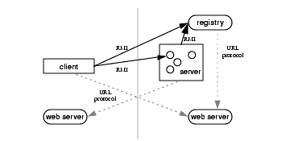

| CONTENTS | PREV | NEXT | Java Remote Method Invocation |
RMI applications are often comprised of two separate programs: a server and a client. A typical server application creates a number of remote objects, makes references to those remote objects accessible, and waits for clients to invoke methods on those remote objects. A typical client application gets a remote reference to one or more remote objects in the server and then invokes methods on them. RMI provides the mechanism by which the server and the client communicate and pass information back and forth. Such an application is sometimes referred to as a distributed object application.Distributed object applications need to:
- Locate remote objects
Applications can use one of two mechanisms to obtain references to remote objects. An application can register its remote objects with RMI's simple naming facility, the
rmiregistry, or the application can pass and return remote object references as part of its normal operation.
- Communicate with remote objects
Details of communication between remote objects are handled by RMI; to the programmer, remote communication looks like a standard method invocation.
- Load class bytecodes for objects that are passed as parameters or return values
Because RMI allows a caller to pass objects to remote objects, RMI provides the necessary mechanisms for loading an object's code as well as transmitting its data.
The illustration below depicts an RMI distributed application that uses the registry to obtain references to a remote object. The server calls the registry to associate a name with a remote object. The client looks up the remote object by its name in the server's registry and then invokes a method on it. The illustration also shows that the RMI system uses an existing web server to load bytecodes of classes written in the Java programming language, from server to client and from client to server, for objects when needed. RMI can load class bytecodes using any URL protocol (e.g., HTTP, FTP, file, etc.) that is supported by the Java platform.